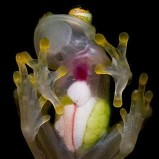

Glass Frog
 The Glass Frog is named because of its translucent skin! From the underbelly you can see the organs from under frog, including it’s heart! The Glass Frog’s skin also helps it to blend in to its surroundings, keeping it safe when predators are near. The Glass Frog is nocturnal, grows up to 1 inch, and lives in the rain forest of South and Central America. When new eggs are laid, the mother will leave them behind while the father frog stays to protect the eggs. The tops of the frogs are patterned with dots to mimic the clutch of eggs being guarded. According to an article from National Geographic, when Glass Frogs, “go to sleep, they siphon off 89 percent of their brightly coloured red blood cells into crystal-lined sacs in their liver, which reflect incoming light and make the frogs appear nearly invisible. With their red blood cells out of view, the frogs become two to three times more transparent.”
Works Cited
- Culebras, Jaime (n.d.). What makes glass frogs transparent? The secret is in their blood. National Geographic.
- Silen, Andrea. (n.d.). Reticulated Glass Frog. National Geographic Kids.
- Bittel, Jason. (2022, December 23). What makes glass frogs transparent? The secret is in their blood. National Geographic.